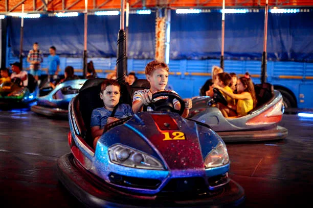
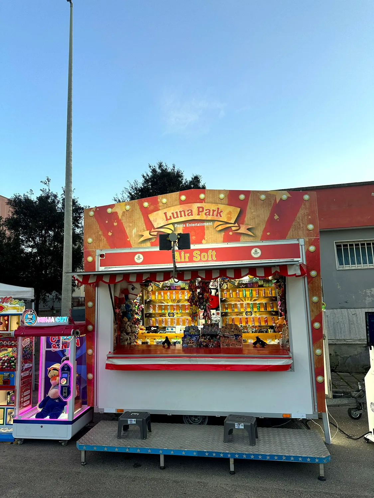
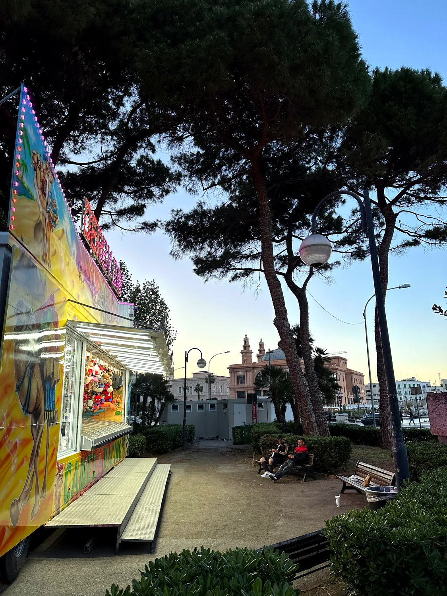
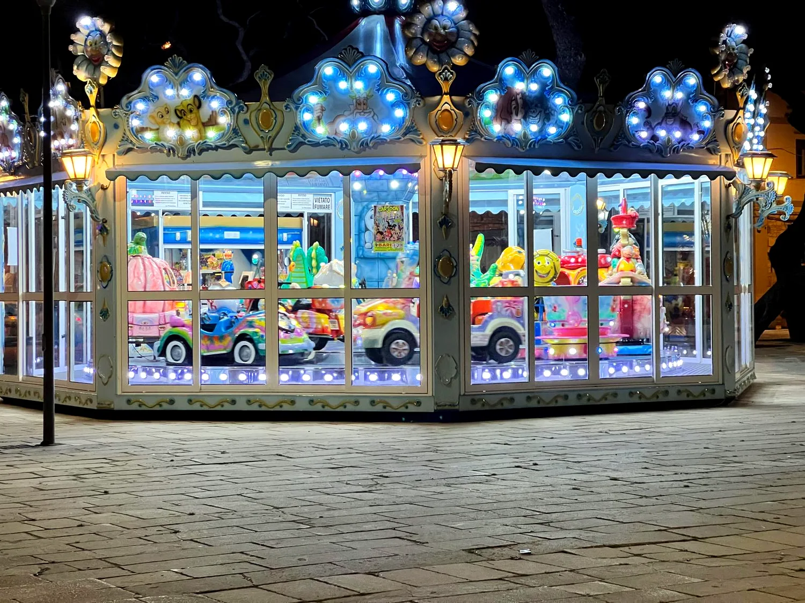
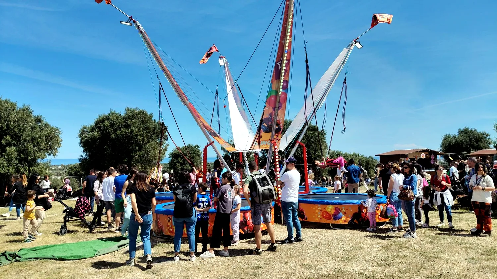
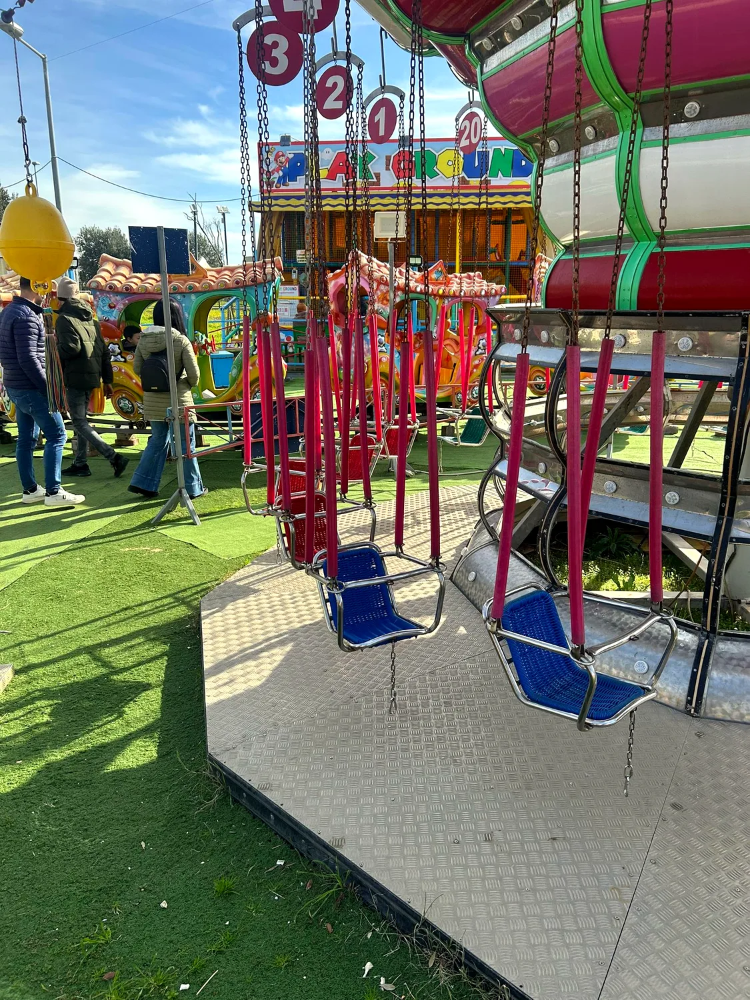
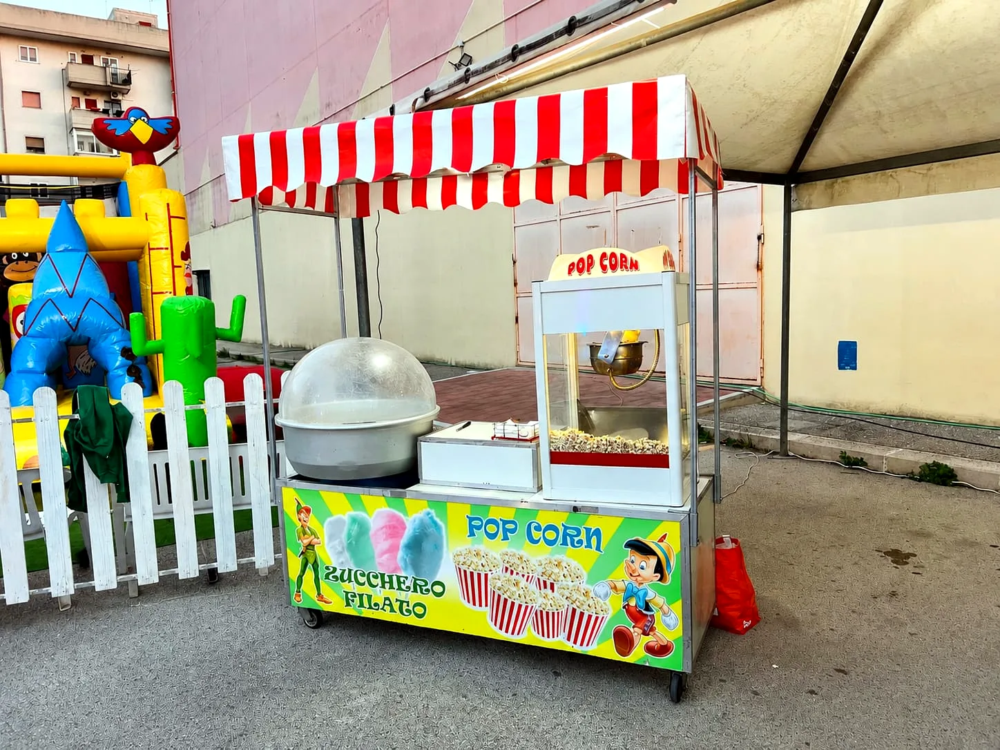
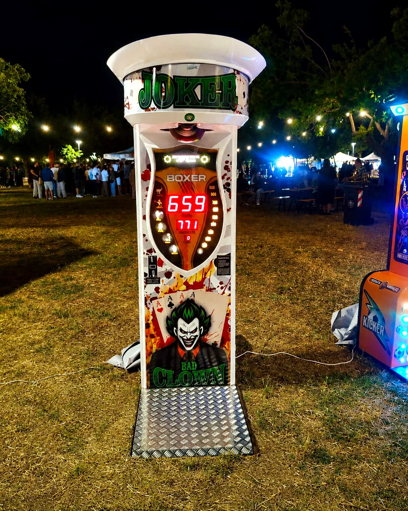
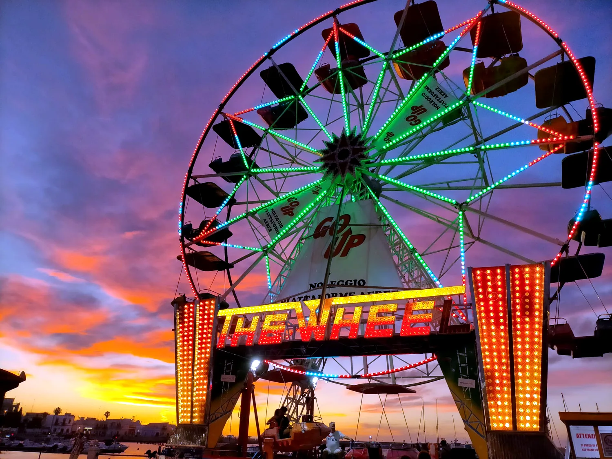
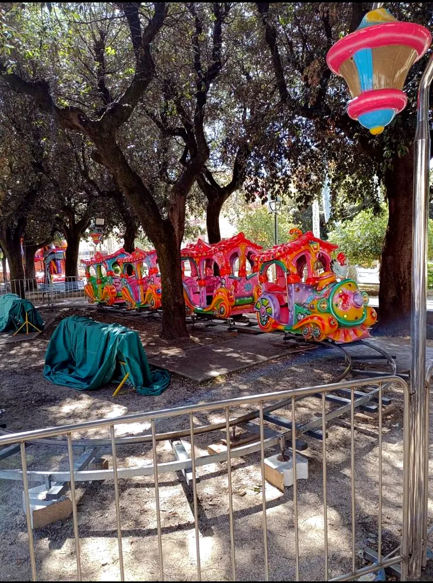

Un catalogo completo di attrazioni per eventi pubblici e privati, feste patronali, sagre, centri commerciali e manifestazioni.

Autoscontro per giostre itineranti, feste patronali, sagre ed eventi pubblici in Puglia.
Pagina dedicata →
Gioco a premio itinerante con premi, ideale per sagre, feste patronali, fiere ed eventi comunali.
Pagina dedicata →
Spettacoli itineranti per bambini, scuole, eventi comunali, feste patronali e manifestazioni.
Pagina dedicata →
Gioco luna park con premi, perfetto per sfide tra amici e famiglie durante eventi e sagre.
Pagina dedicata →
Giostra coperta luminosa, adatta ai bambini e perfetta per piazze, feste patronali e centri commerciali.
Pagina dedicata →
Attrazione dinamica per bambini e ragazzi, ideale per eventi pubblici e manifestazioni.
Pagina dedicata →
Attrazione colorata e compatta per bambini, ideale per giostre itineranti ed eventi in Puglia.
Pagina dedicata →
Postazioni food per eventi, feste, sagre, manifestazioni e aree di intrattenimento.
Pagina dedicata →
Giochi di forza e abilità per aree di intrattenimento, eventi aziendali, feste e manifestazioni.
Pagina dedicata →
Attrazione iconica per grandi piazze, eventi comunali e feste patronali in Puglia.
Pagina dedicata →Attrazione tecnologica di realtà virtuale per eventi, feste e manifestazioni.
Pagina dedicata →
Trenino itinerante per bambini, perfetto per parchi, feste, villaggi e manifestazioni.
Pagina dedicata →Le attrazioni possono variare in base a periodo, disponibilità e caratteristiche dell'evento. Oltre alle pagine già presenti nel catalogo, Perris Entertainment può proporre anche altre soluzioni per completare l'area di intrattenimento.
Le attrazioni Perris Entertainment possono essere richieste per eventi organizzati oppure, quando lo spazio e le autorizzazioni lo permettono, per lavorare con biglietto acquistato in cassa. Valutiamo ogni richiesta in base a città, periodo, affluenza prevista e condizioni operative.